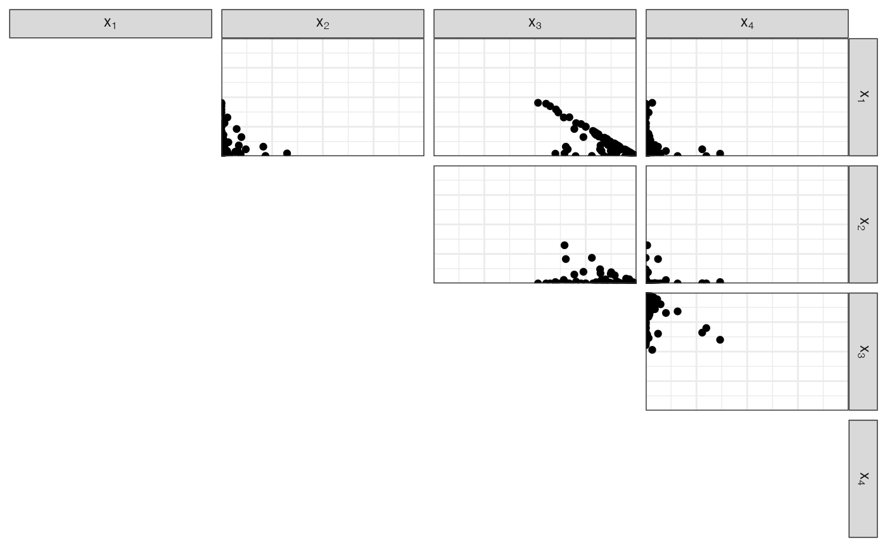
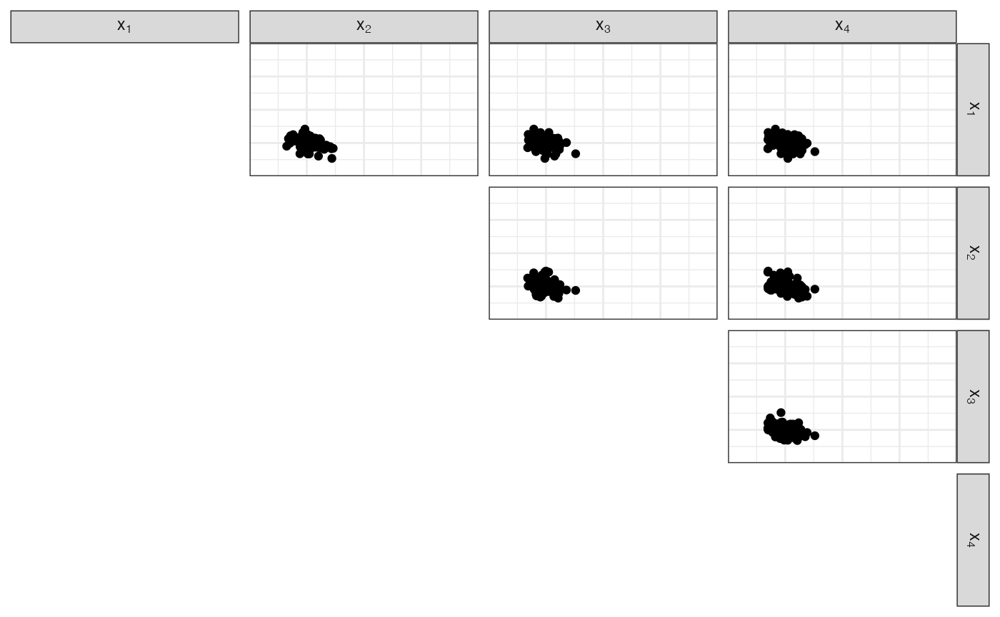
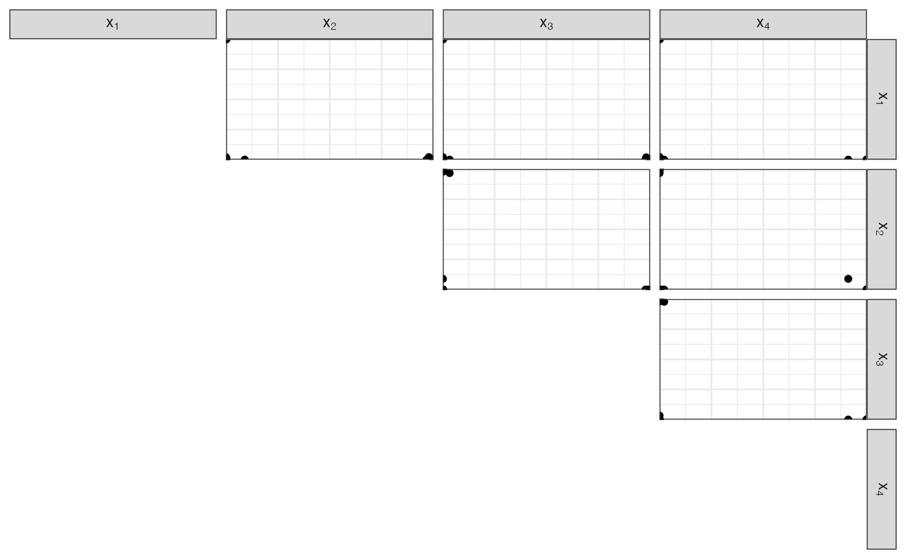

vignettes/dirichlet-distribution.Rmd
dirichlet-distribution.RmdThis package contains functions to sample from a Dirichlet distribution.
We call \(\text{Simplex}{(p-1)}\) the set of vectors in \(\mathbb{R}^p\) whose components form a distribution on \(p\) items.
In other words, \(\boldsymbol{X} \in \text{Simplex}{(p-1)}\) iff \(X_i \in [0,1]\) and \(\sum_{i=1}^p X_i = 1\).
Let \(\boldsymbol{X}\) be a vector in \(\text{Simplex}{(p-1)}\), let \(\boldsymbol{\alpha}\) be a vector in \(\mathbb{R}^p\) with positive components.
Then, \(X\) can have the Dirichlet distribution: \(X \mid \boldsymbol{\alpha} \sim \text{Dirichlet}{(\boldsymbol{\alpha})}\).
We can write \(\boldsymbol{\alpha} = \alpha_0 \, \boldsymbol{\nu}\), where:
If \(\boldsymbol{\nu}\) is constant, \(\boldsymbol{\nu} = 1/p\). The Dirichlet distribution is called symmetric Dirichlet, and is only parametrised by the concentration parameter \(\alpha_0\).
Sample from a \(p=4\) Dirichlet:
n <- 100 # The parameter alpha <- c(0.5, 0.1, 5, 0.1) p <- length(alpha) # Concentration and base measure alpha0 <- sum(alpha) nu <- alpha / alpha0
\(\alpha_0 = 5.7\)
\(\boldsymbol{\nu} = \left( 0.0877193, 0.0175439, 0.877193, 0.0175439 \right)\)
\(\boldsymbol{\alpha} = \left( 0.5, 0.1, 5, 0.1 \right)\)
df_diri <- fun_rdirichlet(n, alpha) head(df_diri) #> # A tibble: 6 x 4 #> `x[1]` `x[2]` `x[3]` `x[4]` #> <dbl> <dbl> <dbl> <dbl> #> 1 0.117 2.04e- 2 0.861 0.00215 #> 2 0.0213 7.78e- 7 0.879 0.0998 #> 3 0.0365 3.79e-15 0.963 0.0000183 #> 4 0.109 3.76e- 4 0.890 0.000165 #> 5 0.124 2.22e- 4 0.876 0.000000474 #> 6 0.0583 3.39e- 9 0.926 0.0158
#> Loading required namespace: ggplot2
#> Loading required namespace: GGally
#> Registered S3 method overwritten by 'GGally':
#> method from
#> +.gg ggplot2
Uniform base measure, unitary Dirichlet parameters: \(\boldsymbol{\alpha} = \boldsymbol{1}\).
nu <- rep(1, p)/p alpha0 <- p alpha <- nu * alpha0
\(\alpha_0 = 4\)
\(\boldsymbol{\nu} = \left( 0.25, 0.25, 0.25, 0.25 \right)\)
\(\boldsymbol{\alpha} = \left( 1, 1, 1, 1 \right)\)
df_diri <- fun_rdirichlet(n, alpha) head(df_diri) #> # A tibble: 6 x 4 #> `x[1]` `x[2]` `x[3]` `x[4]` #> <dbl> <dbl> <dbl> <dbl> #> 1 0.232 0.0749 0.00782 0.686 #> 2 0.0754 0.490 0.0305 0.404 #> 3 0.241 0.206 0.162 0.391 #> 4 0.126 0.343 0.164 0.367 #> 5 0.233 0.529 0.232 0.00714 #> 6 0.539 0.133 0.162 0.166
scatter_matrix_simplex(df_diri)
Concentration parameter \(\gg p\), Dirichlet parameters \(\gg 1\)
nu <- rep(1, p)/p alpha0 <- 100 alpha <- nu * alpha0
\(\alpha_0 = 100\)
\(\boldsymbol{\nu} = \left( 0.25, 0.25, 0.25, 0.25 \right)\)
\(\boldsymbol{\alpha} = \left( 25, 25, 25, 25 \right)\)
df_diri <- fun_rdirichlet(n, alpha) head(df_diri) #> # A tibble: 6 x 4 #> `x[1]` `x[2]` `x[3]` `x[4]` #> <dbl> <dbl> <dbl> <dbl> #> 1 0.268 0.250 0.228 0.254 #> 2 0.223 0.235 0.304 0.237 #> 3 0.331 0.244 0.152 0.272 #> 4 0.302 0.277 0.211 0.210 #> 5 0.267 0.172 0.330 0.230 #> 6 0.310 0.237 0.203 0.250
scatter_matrix_simplex(df_diri)

Concentration parameter \(\\ p\), Dirichlet parameters \(\\ 1\)
nu <- rep(1, p)/p alpha0 <- 0.01 alpha <- nu * alpha0
\(\alpha_0 = 0.01\)
\(\boldsymbol{\nu} = \left( 0.25, 0.25, 0.25, 0.25 \right)\)
\(\boldsymbol{\alpha} = \left( 0.0025, 0.0025, 0.0025, 0.0025 \right)\)
df_diri <- fun_rdirichlet(n, alpha) head(df_diri) #> # A tibble: 6 x 4 #> `x[1]` `x[2]` `x[3]` `x[4]` #> <dbl> <dbl> <dbl> <dbl> #> 1 9.67e- 1 0. 3.64e-12 3.30e- 2 #> 2 1.67e- 15 1.00e+ 0 1.54e-83 4.35e- 96 #> 3 0. 6.71e- 6 8.21e-86 1.00e+ 0 #> 4 2.72e-220 5.72e-105 1.00e+ 0 1.82e-124 #> 5 8.72e-193 1.00e+ 0 2.71e-12 3.89e- 81 #> 6 0. 1.00e+ 0 6.52e-76 0.
scatter_matrix_simplex(df_diri) #> Warning: Removed 1 rows containing missing values (geom_point). #> Warning: Removed 1 rows containing missing values (geom_point). #> Warning: Removed 1 rows containing missing values (geom_point). #> Warning: Removed 1 rows containing missing values (geom_point). #> Warning: Removed 1 rows containing missing values (geom_point). #> Warning: Removed 1 rows containing missing values (geom_point).
